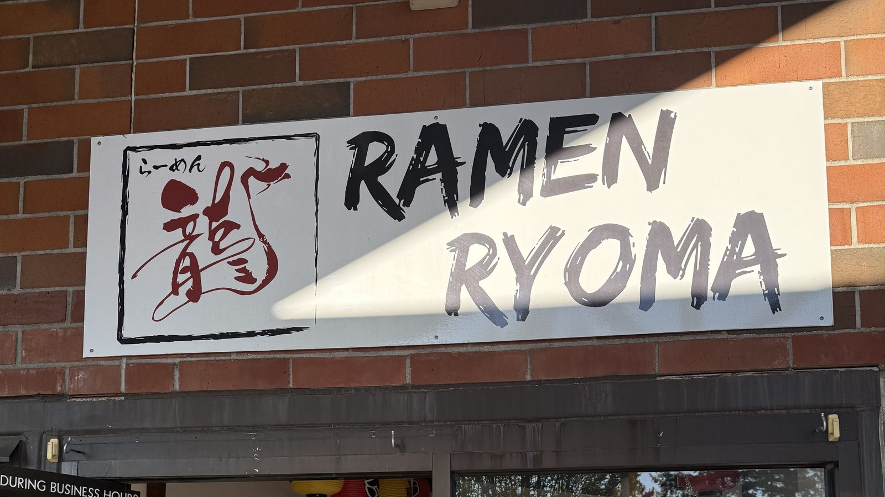
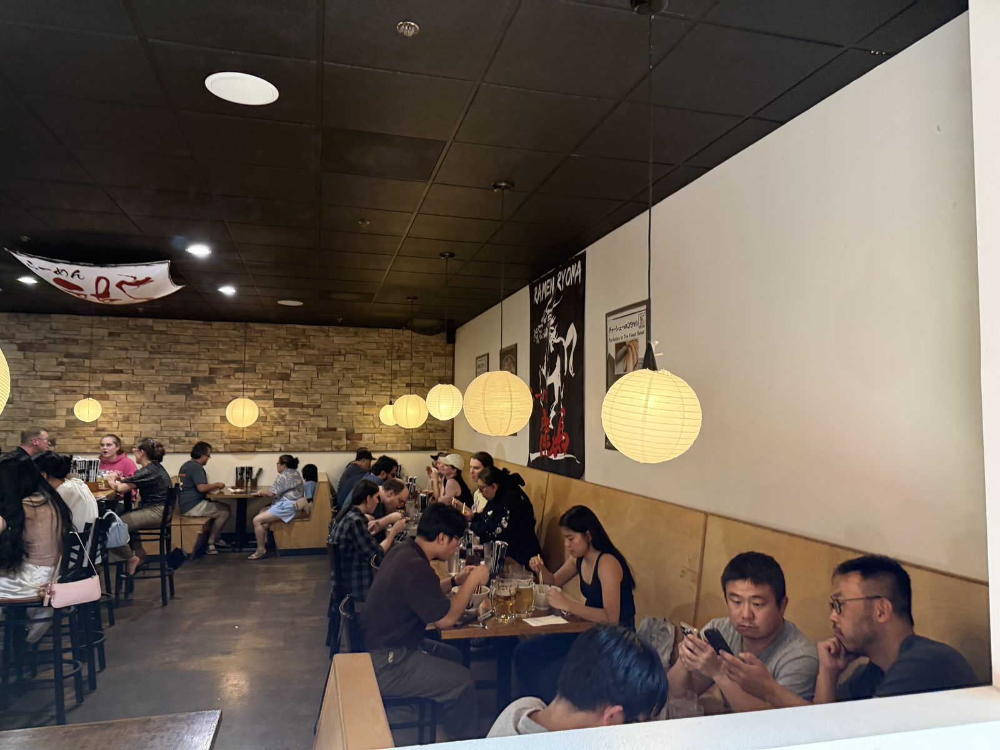
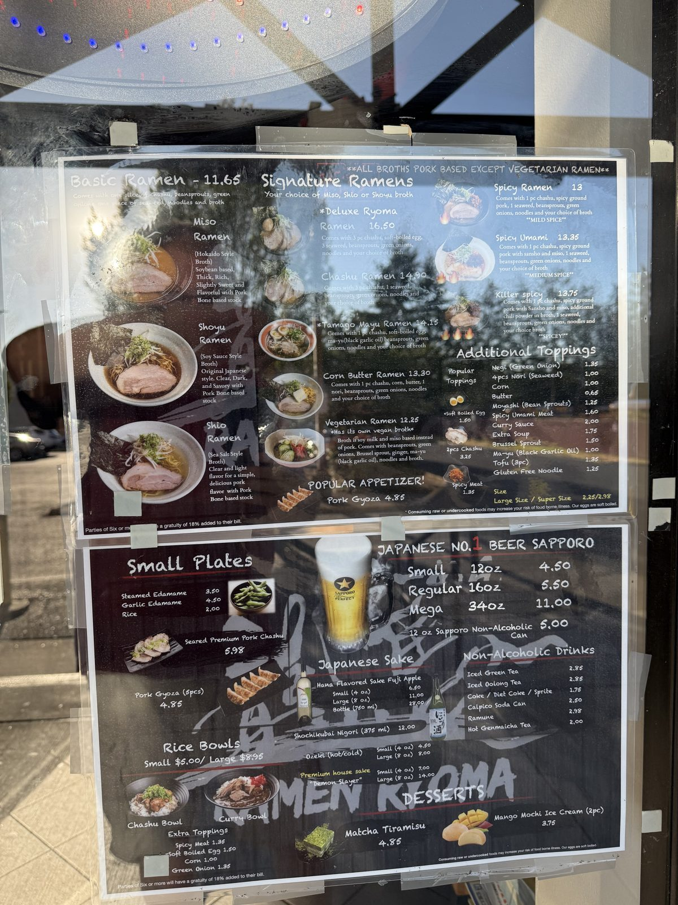
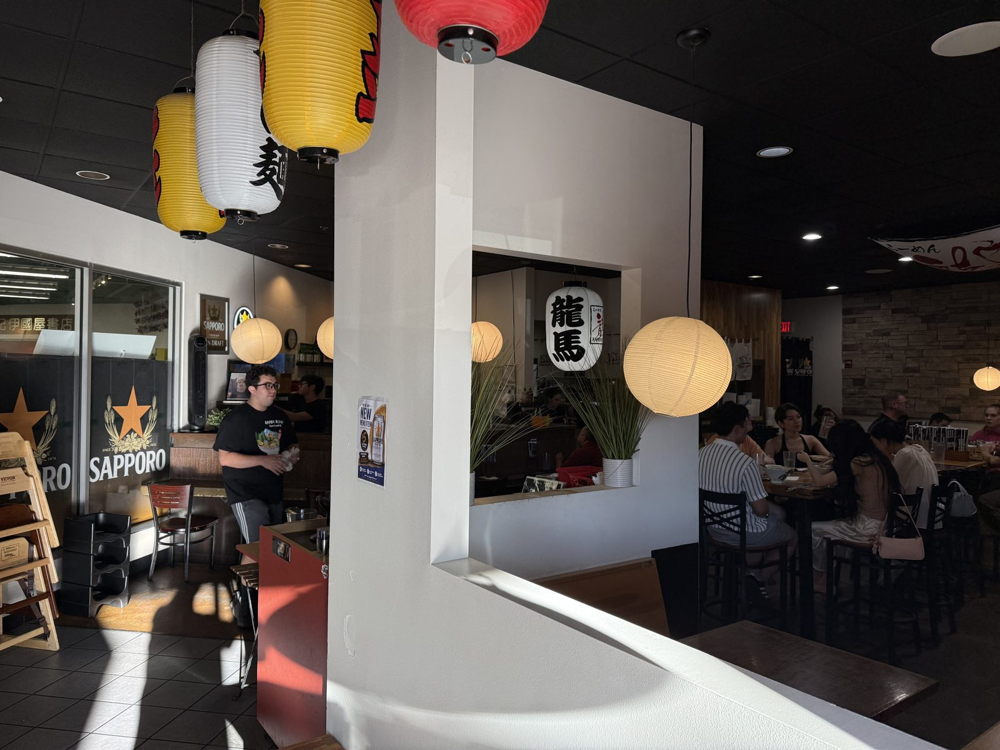

The Chashu at Ramen Ryoma

Seven-fifteen on a Thursday evening, and there was a line. Not a line down the sidewalk — the kind that fills the little bench inside the door, spills two families into the entryway, and has one server moving sideways through it with three bowls up. Ramen Ryoma seats maybe fifty people and on an ordinary weeknight in July every one of those seats was taken.
I want to be careful here, because this is the first proper entry in this notebook and I would rather not open by overselling. So let me put the claim down plainly and then spend the rest of the page trying to earn it: this is the best bowl of ramen I have had on the West Coast.

The bowl
The Deluxe Ryoma Ramen, $16.50, in the miso broth. It arrives with three slices of chashu, a soft-boiled egg, three sheets of seaweed, beansprouts and green onions, and it is the pork that I have been thinking about since.
Three slices is a serious amount of chashu for a sixteen-dollar bowl, but quantity isn't the thing worth writing down. The thing worth writing down is that the pork tasted like the point of the dish rather than a garnish on top of it — which, if you eat much ramen in the United States, you will know is not the ordinary experience. The ordinary experience is a thin, grey, faintly sweet disc that has been sitting in a warming tray, added because the menu promised it.
The tell is on the small-plates board: they will sell you Seared Premium Pork Chashu on its own, five slices for $5.98, no soup involved. A kitchen only does that when it thinks the pork can carry a plate by itself. Ryoma's can.
A short word on ramen, since this is a notebook
Almost every argument about ramen is really an argument about two things that get confused with each other. There is the broth — the stock, usually simmered from pork bones, sometimes chicken, sometimes both — and then there is the tare, the concentrated seasoning spooned into the bottom of the bowl before the soup goes in. The tare is what people are naming when they say "miso" or "shoyu" or "shio." It is entirely possible for three bowls to share one stock pot and taste like three different restaurants.
Ryoma's board is unusually honest about this. It lists one line across the top — all broths pork based except vegetarian ramen — and then offers the same three seasonings across the whole signature menu. Their shio is described as clear and light, which tells you the pork stock underneath is a chintan, a clear stock, simmered gently so it never emulsifies. That is a different animal from the opaque, milky tonkotsu of Hakata, which is boiled hard for hours until the collagen and fat break into the liquid. Neither is better. But a clear pork stock has nowhere to hide, which is a braver way to run a kitchen.
The miso I ordered is the Hokkaido style, and it has a decent origin story: miso ramen is the young one of the family, generally credited to a Sapporo shop in the mid-1950s, where the story goes that a cook stirred noodles into a bowl of miso pork soup a customer had asked after. It went north-to-south across Japan from there. It is built for cold weather — thicker, sweeter, fattier than shoyu — which is a slightly funny thing to order in July, and I would order it again in July.

And on chashu, which is the reason for this entry
The word is borrowed and the borrowing misleads people. Chashu is written with the characters for Cantonese char siu — literally "fork-roast," the lacquered red barbecued pork you see hanging in a window in Chinatown. But what goes in a bowl of ramen in Japan is usually not roasted at all. It is nibuta: pork, most often belly, rolled and tied into a cylinder, then simmered slow in soy sauce, mirin, sake and sugar until the fat has given up and gone silky. Same name, different craft entirely.
What separates a good one from a bad one is mostly patience and mostly fat. Belly rolled with the fat laminated through it bastes itself from the inside as it cooks; loin, which is cheaper and slices prettier, has nothing to give and goes to cardboard the moment it is overdone. Then the good shops finish it — a pass under a torch or on a hot pan just before it hits the bowl, so the outside edge caramelises and the middle stays soft. Ryoma's menu says seared, and it means it.
There is a case, too, that chashu is the honest test of a ramen shop. The broth can be bought in. The noodles can be bought in, and at most shops they are. The chashu is the one component that has to be made in-house on a schedule nobody sees, and it is the first thing to suffer when a kitchen starts cutting corners. If the pork is good, somebody back there still cares.
About that West Coast claim
It is a personal ranking, not a survey, and personal rankings should come with their terms attached. Mine: I am comparing bowls I have actually sat down and eaten between Seattle and Los Angeles, I care more about the pork and the broth than about the noodle, and I have a documented weakness for miso. Somebody who ranks on noodle texture, or who thinks a bowl of ramen should be tonkotsu or nothing, may reasonably land somewhere else entirely. Tell me where and I will go eat there.
What pushes Ryoma up the list for me is not one spectacular element. It is that nothing in the bowl is coasting, and that the pork — the part most places treat as overhead — is the part they lead with.

Two things I noticed that have nothing to do with the food
The first is the name. 龍馬 is Ryōma — "dragon horse" if you take the characters at face value, but to anyone Japanese it is one particular man: Sakamoto Ryōma, the low-ranking Tosa samurai who brokered the alliance that brought down the shogunate and was assassinated in Kyoto in 1867, aged thirty-one, before he could see what he had started. He is the romantic figure of that whole period. Naming a ramen shop after him is roughly the energy of naming a diner "Lafayette's." The dragon in the logo on the sign outside is the 龍 of his name.
The second is where you are. Ryoma sits in the plaza at 10500 SW Beaverton-Hillsdale Highway, which is the Uwajimaya plaza — the Japanese grocery — and the window on the left side of the dining room looks directly into 紀伊國屋書店, Kinokuniya. I ate a bowl of ramen twenty feet from a Japanese bookshop and, being who I am, went and stood in it afterwards for longer than I had intended. If you are making the drive, make an evening of it rather than just a dinner: the grocery is worth an hour on its own, and the bookshop is genuinely good.
What I would do differently
Order the gyoza. Five pieces for $4.85 and I talked myself out of it because I had a sixteen-dollar bowl coming, which was the wrong call twice over. Next time I am also getting the seared chashu plate as a starter and then ordering a bowl anyway, and I accept how that sounds.
If you want the same pork for less money: the Chashu Ramen is $14.90 and gives you the same three slices without the egg and the extra seaweed. If you want to test the kitchen cheaply, the Basic Ramen is $11.65 — one slice of chashu, and in 2026 that is a genuinely surprising number for a bowl this size in the Portland metro. Extra chashu is $3.25 for two slices, which is the best-value line on the board.
The practical bit
Ramen Ryoma — in the Uwajimaya plaza, 10500 SW Beaverton-Hillsdale Hwy, Beaverton, Oregon 97005. Big shared lot; parking was not a problem even with a full house.
Hours, as posted in the window on 24 July 2026 — note the afternoon break, which will catch you out:
- Monday–Thursday: 11:00–2:30, then 5:00–9:00
- Friday, Saturday, Sunday: 11:00–9:00
What things cost (also as of that evening): Basic Ramen $11.65 · Chashu Ramen $14.90 · Deluxe Ryoma $16.50 · Tamago Mayu $14.15 · Corn Butter $13.30 · Vegetarian $12.25 · Pork Gyoza (5) $4.85 · Seared Premium Pork Chashu $5.98 · Sapporo from $4.50 for 12oz, up to a 34oz "Mega" for $11.00 · Matcha tiramisu $4.85.
Worth knowing: there is a spice ladder — Spicy ($13, mild), Spicy Umami ($13.35, medium, with sansho), and Killer Spicy ($13.75, which the board writes in shouting capitals). The vegetarian bowl has its own genuinely separate vegan broth built on soy milk and miso rather than a pork stock with the pork left out, which is more than most places manage. Gluten-free noodles are $1.25. Parties of six or more get an automatic 18% gratuity.
Go early or go late. We arrived just after seven on a Thursday and waited. On a Friday or Saturday I would not turn up at seven without expecting to stand.